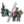
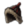
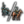
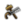

陆战就是是部署和调动一切军事资源对敌作战，一般情况下，这会直接影响战争的结果。在欧陆风云4中绝大部分战斗都是以陆地展开的，当然海战也很重要，但是失去陆权才是游戏中战争胜败的通常原因。因此，陆战的艺术意义重大，其复杂性我们将在这里尽可能充分地加以讨论。
战斗界面
一场战斗不仅仅是由一些简单的修正或者掷骰子的数字所决定的，而是通过一个复杂的模拟，让双方的军队部署在两排阵地中，让陆军单位与面前的敌人作战，同时在允许的情况下，敌人侧翼的陆军单位（有足够高的侧翼距离）可以在不同的位置间进行移动。与此同时，还要考虑撤退机制、消灭或击溃士气低落的单位、进行增援已经部署预备队。
可惜的是，欧陆风云4的战斗系统，其战斗界面并不能非常直观或明确地，让玩家看到哪个部队正与哪个部队战斗或一支部队正向什么地方移动。因此，有必要通过本章内容来明确决定陆战胜利的各要素。

地形
每个省份的地形都显示在地形和简易地形地图模式。地形模式展示了一张自然外观的地图，而简易地形模式的色彩代表了每一个省份的地形类别；如果有需要，两者都有工具提示来显示当前的地形类别、堡垒等级以及当前的冬季状态。一些地形对在该省运动的军队增加了移动花费的惩罚，同时对攻击方增加了一种负面的地形修正，不同类型的地形有不同的修正效果。
这里列出了地形的类型和它们给予的修正效果。
穿越惩罚
穿越惩罚将减少攻击方所有骰子得数，情况如下：
- 穿越河流: 所有骰子得数 -1。
- 两省份之间的河流会在省份窗口中以一个小河流标志显示，将鼠标悬停于其上将可以看到这个省份与哪个省份之间需要跨河。
- 穿越海峡: 所有骰子得数 -2。移步海峡界面查看所有海峡列表。
- 两栖登陆: 所有骰子得数 -2。
- 这种情况包括了从海上发起攻击和直接登陆港口作战。
当攻击方军队来自复数个省份时，任意一支部队遭到的穿越惩罚都会由全军承担。如果攻击方将领的机动性比防守方将领的高，则攻击方不会受到任何穿越惩罚。对将领机动性的检定是每日都会进行的，所以，即使高机动将领总有机会力挽狂澜——甚至是在他没有第一时间到达战场的情况下。
围城期间爆发的战斗
通常来说，“攻击方”被定义为相对于进入一个已有敌方单位所在省份的军队，而“防御方”则定义为早于“攻击方”之前就已经占据该省份的军队。然而，当一只军队正在围攻一个有堡垒的省份并且该省份未被攻占时遭到堡垒省份所有者军队或其盟友军队的攻击，则双方的角色就会对调：围攻堡垒的一方会被判定为“攻击方”， 同时企图破坏围攻的一方会被判定为“防御方”。进攻和地形惩罚都适用于“攻击方”, 同时不论进攻的“防御方”将领有多少机动点数，穿越河流和穿越海峡的攻击惩罚都判定无效。
玩家可以在建造堡垒时考虑到这一点，同时也可以在战争以此来决定优先围攻哪个堡垒或去解救已方被围攻堡垒。必须要注意的是仅适用于带有堡垒的省份。
战斗部署
军团组成
- 主条目：陆军#不同兵种的配比
为了保障军队的作战效率最大化，适当的军团组合（步骑炮比例搭配）是非常重要的。
战线宽度
战线宽度（英文：Combat width，旧译：战场宽度、战斗宽度）决定一场战斗会有多少单位能有效的参加战斗。如果有足够的单位，每1战线宽度都能在前后两排分别站立1个单位。基础战线宽度值为15。[1]随着军事科技的进步，战线宽度会不断扩大，这使得各国能有效使用更多士兵参加战斗。除了美洲土著以外的所有国家的科技都从2或3级开始，所以他们的起始战线宽度是20。一场战斗中对阵双方的战斗宽度会默认使用参与者中战斗宽度较大一方的值。
这是不同军事科技下战线宽度的对应表格。
| 军事科技等级 | 0级 | 2级 | 5级 | 6级 | 8级 | 11级 | 14级 | 16级 | 18级 | 20级 | 22级 | 24级 | 26级 |
|---|---|---|---|---|---|---|---|---|---|---|---|---|---|
| 战线宽度 | 15 | 20 | 22 | 24 | 25 | 27 | 29 | 30 | 32 | 34 | 36 | 38 | 40 |
排兵布阵
陆军单位阵型的排列是由AI自动完成的，玩家无法介入。本节解析AI的布阵策略。通过不断的观察和实验，我们得出了一个共同的结论，即游戏中的排兵布阵取决于每支部队（1K）的兵力和总体的陆军兵种组成。
下图中，小框里面打叉代表步兵，小框里面一条斜杠代表骑兵，小框里面带一点代表炮兵。
注：本段落在参考英文wiki的基础上，由中文百科群成员实验后修改完成。
布阵原则
- 前排先布置步兵，再布置骑兵。
- 后排先布置炮兵，再布置步兵和骑兵。
- 骑兵从两边向中央布置，步兵和炮兵从中央向两边布置。
- 布置方案以战场中线为基准尽可能的对称。
- 步兵和骑兵在后排布置时只能布置在相同兵种之后，除非一方数目不足而另一方数目过量。
步兵不足时的布阵
若步兵数小于战线宽度的一半，则按以下规则布阵。
- 将步兵从中央开始布置在前排。
- 将骑兵从中间向两边的布置在前排的两侧剩余位置。
- 将炮兵从中央开始布置在后排，但不得超过前排的宽度，即炮兵的前方必须有骑兵或步兵。
- 若后排仍有剩余空位：
- 若第2步中骑兵数目足以充满前排，则将剩余骑兵布置在后排的两侧，从两边向中央部署。
- 若第2步中骑兵不足以填满前排，则将剩余炮兵从中央向两边的布置在前后两排，使前后两排宽度相同或前排略宽1个格子。
步兵充足时的布阵
步兵数大于等于战场宽度的一半，则按以下规则布阵。
- 将步兵从中央开始布置在前排，左右对称，但在两边各空出 min{ 战场宽度/4 , 骑兵数/2 } 的位置(此处除法为整除，小数部分舍去)。
- 将骑兵布置在第1步中前排空出的位置中。
- 将炮兵布置在后排中央。
- 若后排仍有空位：
- 空位对应的前排位置为步兵的，此位置优先放置步兵。
- 空位对应前排位置为骑兵的，此位置优先放置骑兵。
- 若步兵或骑兵一方数目不足，则数目充足的一方可跨过"步骑分界线"向另一方位置部署。
战斗过程
当两支敌对的军团在一个省份相遇时，战斗就会发生直到其中一支被击溃或全军覆没。
战斗概念
在介绍之前，重温并补充一些本节的概念：
- 军团：玩家和AI操控的作战单位，由许多部队编成。
- 部队：游戏中的基本作战单位，人数上限为1000。多支部队可组成军团提高战斗力。
- 攻击方/防御方：“攻击方”被定义为相对于进入一个已有敌方单位所在省份的军队，而“防御方”则定义为早于“攻击方”之前就已经占据该省份的军队。
- 我方/敌方：此为战斗概念。EU4为即时战略游戏，也就是说，战斗中不存在战棋游戏中“你只攻击，我只挨打”的情况。当一支部队猛烈打击对手时，对方部队也会予以反击，双方的攻击是同时计算的。因为，为了防止与上述的攻击方/防御方混淆，这里将两支交手的军团简称为我方和敌方。
- 参战部队/未参战部队/参与战斗的部队：在一场战斗中，受战线宽度和侧翼攻击范围限制，并非所有派过去的部队都能第一时间打击敌人。因此，将单位时间内对对方部队输出的部队叫参战部队；与此相对应的，在战斗中，但没有打击对方部队的，叫未参战部队，这些部队大多作为预备役，在参战部队败下阵后会支援前线；而该部队无论参战或是不参战，不管在不在战场上，只要其身处战斗，都叫参与战斗的部队，这些部队每天都会受到士气惩罚。
战斗画面
如下为陆战画面，其中：
红框：撤退标识，当战斗经过两轮火力-冲击阶段（12天）时，玩家可点击此按钮，将部队有序撤离。
绿框：参战将领信息及将领特质。
黄框：部分决定骰子点数的变量，例如骰子，将领点数，地形等。
蓝框：参战军团的平均士气。注意与下文中平均最大士气区分开。
紫框：参战军团的平均训练度，平均最大士气和军事战术。
浅橙框：前排步兵/骑兵数量及全部炮兵的数量。骑兵左上角的加/减号代表前排骑兵比例是否合适。
粉框：上面粉框代表双方军团的战斗部署。不同国家的部队用不同颜色标识。随着人员伤亡，小框颜色会逐渐变浅。将鼠标悬停在小框上，则可显示该部队的具体信息：实时人数、士气，训练度等。而将鼠标悬停在下面粉框时，可查看本场战斗的战线宽度。
上文出现的概念均于下文解释。

阶段
战斗由一系列持续三天的阶段组成，在火力与冲击阶段之间交替进行，战斗一开始为火力阶段。一般来说，步兵和炮兵在火力阶段能打出大量输出，而骑兵能在冲击阶段大杀四方。
攻击目标
攻击目标由AI自行选择，前排部队和后排炮兵可以攻击任何在其攻击范围内的敌军。单支部队只可以攻击一支部队，但却可以承受多支敌方部队的攻击。一般情况下前排部队只与其正面的敌人交战，但如果其正面没有部队迎战，前排部队会在侧翼攻击范围内打击其正面相邻区域的敌军。因此，在陆战中，其他条件不变下，顶满战线宽度的军团，其优势要比没有顶满的强。战斗中其正面没有敌人的部队，在侧翼攻击范围允许下，可以攻击周边敌军部队，这样敌军部队会遭受多支部队打击，增加战损。
有时，如果能造成敌军更多损失的话，前排部队有时候也会不顾一切地执行侧翼攻击。这种不顾一切执行侧翼攻击的状况，通常会发生在敌军全部为炮兵或者陆军兵种十分落后的情况下。
后排的步兵和骑兵部队不能发动进攻，他们只有在其正前方的我方部队败退后顶上前排。炮兵是唯一可以从后排发起攻击的兵种，但在后排攻击的炮兵只会造成50%的基本战损。大时代能力“改良炮兵射程”会增加20%后排炮兵伤害，能将该数字提升至70%。
下图显示了攻击正面部队、攻击侧翼部队以及未参战三种情况：

战斗系统
EU4的战斗系统使用四个公式来计算参战部队的人员伤亡和士气打击：
在如下公式中，[math]\displaystyle{ Atk }[/math]代表我方，[math]\displaystyle{ Def }[/math]代表敌方。若无特殊说明，以下公式均代入我方视角。
骰子点数(Pips)
每个阶段（持续三天的火力/冲击）开始，双方都会掷骰子。产生的点数将直接影响部队在这个阶段中，每天对敌军造成的士气打击和人员伤亡。
骰子计算公式如下：
[math]\displaystyle{ Pips_{T} = Roll + \max (0, Leader_{Atk} - Leader_{Def}) + Pips_{Atk} - Pips_{Def} - Terrain }[/math]
其中：
- 骰子 ([math]\displaystyle{ Roll }[/math])：一个0-9的随机数，每个阶段开始时投掷一次。
- 将领属性 ([math]\displaystyle{ Leader }[/math])
 ：领军将领的属性分别影响相应阶段（火力/冲击）。
：领军将领的属性分别影响相应阶段（火力/冲击）。 - 我方/敌方部队陆军单位属性 ([math]\displaystyle{ Pips }[/math])
 12 12：我方/敌方部队的攻击/防御点数（火力/冲击/士气）。请注意，这是兵种自带的点数，要与下文说的我方部队伤害区分开来。后排炮兵会将其50%的冲击和火力防御点数（不为整数则就近取小值。16级炮兵开始提供一点防御火力点数，29级炮兵提供一点防御冲击点数）赋予到该支炮兵前的那只部队上。
12 12：我方/敌方部队的攻击/防御点数（火力/冲击/士气）。请注意，这是兵种自带的点数，要与下文说的我方部队伤害区分开来。后排炮兵会将其50%的冲击和火力防御点数（不为整数则就近取小值。16级炮兵开始提供一点防御火力点数，29级炮兵提供一点防御冲击点数）赋予到该支炮兵前的那只部队上。 - 地形修正 ([math]\displaystyle{ Terrain }[/math])：恶劣地形会给攻击方部队造成进攻惩罚。
基础战损(Multipliers)
在清算最后的人员伤亡和士气打击前，系统还会计算单支部队造成的“基础战损”：
[math]\displaystyle{ Multipliers = \frac{Strength}{1000} \cdot \frac{Damage }{Tactics} \cdot (1 + CombatAbility) \cdot (1 + Discipline) \cdot (1 + \frac{Round}{100}) }[/math]
其中：
- 我方部队人数 ([math]\displaystyle{ Strength }[/math])
 ：若我方部队人数不满员，输出伤害按比例减少。
：若我方部队人数不满员，输出伤害按比例减少。 - 我方部队伤害 ([math]\displaystyle{ Damage }[/math])：此项由军事科技等级及修正（步兵火力/骑兵冲击一类）决定。详见 军事科技对陆军的累计加成效果。
- 敌方部队军事战术最终值 ([math]\displaystyle{ Tactics }[/math])：敌方部队的军事战术最终值。
- 我方部队作战能力加成 ([math]\displaystyle{ CombatAbility }[/math])

 ：我方部队的步兵/骑兵/炮兵作战能力加成。
：我方部队的步兵/骑兵/炮兵作战能力加成。 - 我方单位训练度 ([math]\displaystyle{ Discipline }[/math])
 ：我方部队的训练度。
：我方部队的训练度。 - 交战军团战斗时间 ([math]\displaystyle{ Round }[/math])
 ：当军团开始战斗时，每天的基础战损增加[math]\displaystyle{ 1\% }[/math]，第一天以[math]\displaystyle{ 1\% }[/math]开始。
：当军团开始战斗时，每天的基础战损增加[math]\displaystyle{ 1\% }[/math]，第一天以[math]\displaystyle{ 1\% }[/math]开始。 - 后排炮兵输出时，此值应再乘以[math]\displaystyle{ 50\% }[/math]。大时代能力“改良炮兵射程”会增加20%后排炮兵伤害，能将该修正提升至[math]\displaystyle{ 70\% }[/math]。
人员伤亡(Casualties)
在骰子点数和基础战损计算完毕后，系统立刻计算敌方部队受我方部队打击下的伤亡人数。需要注意的是，这是一支敌方部队受一支我方部队打击的计算公式，若该敌方部队受到多支我方部队打击，则将每一项分开计算，并最后加在一起：
[math]\displaystyle{ Casualties=(15+5\times Pips_{T})\cdot Multipliers\cdot(1+Damage_{Mod})\cdot(1+DamageRev_{Mod}) }[/math]
其中：
- 骰子点数([math]\displaystyle{ Pips_{T} }[/math])：第一个公式采用火力/冲击点数后的计算结果。
- 基础战损([math]\displaystyle{ Multipliers }[/math])：第二个公式的计算结果。
- 我方部队阶段修正 ([math]\displaystyle{ Damage_{Mod} }[/math])
 ：我方部队增加火力与冲击伤害的修正。
：我方部队增加火力与冲击伤害的修正。 - 敌方部队阶段修正 ([math]\displaystyle{ DamageRev_{Mod} }[/math])
 ：敌方部队降低火力与冲击伤害的修正。
：敌方部队降低火力与冲击伤害的修正。 - 需要注意的是，当炮兵暴露于前排，受到对面部队直接攻击时，其会受到双倍的人员伤亡。
士气打击(MoraleCasualties)
在骰子点数和基础战损计算完毕后，系统立刻计算敌方部队受我方部队进攻下的士气打击。需要注意的是，这是一支敌方部队受一支我方部队打击的计算公式，若该敌方部队受到多支我方部队打击，则将每一项分开计算，并最后加在一起。并且，在军团和战斗界面中，玩家无法看到单支部队的士气值，只能看到所有部队士气值的平均值：
[math]\displaystyle{ MoraleCasualties = (15 + 5 \cdot Pips) \cdot Multipliers \cdot (1 + DamageModifier)\cdot (1 + DamageReceived) \cdot\frac{MaxMorale}{540} + PassiveMoraleDamage \cdot ( 1 - RO) }[/math]
其中：
- 骰子点数([math]\displaystyle{ Pips_{T} }[/math])：第一个公式采用士气点数后的计算结果。
- 基础战损([math]\displaystyle{ Multipliers }[/math])：第二个公式的计算结果。
- 我方部队士气最大值([math]\displaystyle{ MaxMorale }[/math])：我方部队士气的最大值。一般情况下，战斗中此值可视为固定值。
- 我方士气打击调整 ([math]\displaystyle{ DamageModifier }[/math])：我方的士气打击调整值
- 敌方受到士气打击调整 ([math]\displaystyle{ DamageReceived }[/math])：敌方的受到士气打击调整值
- 士气损耗 ([math]\displaystyle{ PassiveMoraleDamage }[/math])：所有参与战斗的部队每天敌方最大士气1%的士气损耗。未参战部队会受到每天2%敌方最大士气的士气损耗，故而将精锐部队置于后方非常不划算。但是，当陆军职业度达到80%后，该值可下降50%([math]\displaystyle{ RO }[/math])。
- 需要注意的是，当炮兵暴露于前排，受到对面部队直接攻击时，其会受到双倍的士气打击。
有几个独特的国家理念可以减少火力和冲击阶段受到的损伤、加强输出的伤害：
增加火力伤害的的理念：
增加冲击伤害的的理念：
信仰 贾法里派的伊斯兰教国家也会获得  +10% 冲击伤害
+10% 冲击伤害
减少火力伤害的的理念：
| 传统 | 理念 | 奖励/野心 | 政策 | |
|---|---|---|---|---|
| -15% | — |
|
— | — |
| -10% |
|
|
— | — |
减少冲击伤害的的理念：
信仰 宰德派的伊斯兰教国家也会获得  -10% 受到的冲击伤害
-10% 受到的冲击伤害
信仰  胡斯派的国家也会获得
胡斯派的国家也会获得  -5% 受到的冲击伤害
-5% 受到的冲击伤害
'Zombie' regiments
In principle, units on the frontline retreat and are replaced by reserve units when they reach either 0 morale or 0 regiment strength. However, before patch 1.34 this mechanic did not function when regiment strength reaches 0 before morale reaches 0 during the first 12 days of a battle. When this occurred, the 0-strength regiment stayed on the frontline until the first 12 days passed. This remains true even when the 0 strength regiment reaches 0 morale during the first 12 days.
Overkill
When a regiment deals morale or kill casualties to a target that has less morale or regiment strength remaining, the excess morale or kill casualties are not distributed to other units. Thus a regiment that has 0.01 morale left after a phase will absorb an entire other day of kill & morale casualties.
战斗结果
在战斗过程中，前排部队人数或士气一旦归零，系统判定此部队即丧失作战能力，将其移出战场，其位置由周边部队补上，优先选择正后排的步兵/骑兵，其次是原位置左边或右边的部队。（但在人数归0的情况下，系统没有将此部队除名，不过军团界面中此部队的人数显示为0）如果此时战场上存在未参战步兵/骑兵部队，即将其从军团前排侧翼补上以维持战斗。
当战斗中的一方军团总人数（极为少见）或士气率先降为0，系统判定该方失败。在没有全歼的情况下，这支军团会撤退到其控制区内休养生息，以便投入下一场战斗。
大部分情况下，失败方会遭受严重的人员损失，但不至于被悉数歼灭。但在以下三个情况中，敌方军团可以被全歼：
- 开始战斗时敌方军团士气为0。
- 战斗结束时，我方军团存活人数（并非人数上限）为敌方的10倍及以上，并且我方军事科技至少比敌方的高2级。
- 在两轮火力-冲击阶段（12天）内，将敌方军团前排投入战斗（即不显示为“处于预备队”）的部队士气降到0的同时，我方军团存活人数（并非人数上限）为敌方的2倍及以上。
战斗统计
以下介绍上述公式中出现的概念。其中大部分都可以从陆军单位和陆军界面找到详细介绍。
军事战术
军事战术会减少己方部队在战斗中受到的伤害。军事科技的提高会提高军事战术的基础值，而训练也会增加军事战术。军事战术的最终值为：
[math]\displaystyle{ 军事战术最终值 = 军事战术基础值 \times 训练度 }[/math]
| 军事科技等级 | 0 级 | 4 级 | 6 级 | 7 级 | 9 级 | 12 级 | 15 级 | 19 级 | 21 级 | 23 级 | 24 级 | 30 级 | 32 级 |
|---|---|---|---|---|---|---|---|---|---|---|---|---|---|
| 军事战术基础值 | 0.5 | 0.75 | 1.0 | 1.25 | 1.5 | 1.75 | 2.0 | 2.25 | 2.5 | 2.75 | 3.0 | 3.25 | 3.5 |
属性点数
每支部队的进攻和防御能力体现为三种数值：火力、冲击和士气。攻击能力使用黄点表示，防御能力使用绿点表示。在不同的战斗阶段，每支部队都使用自身的攻击能力输出伤害，使用自身的防御能力抵御伤害。[2]
由此，我们可以推断出，高攻击力在玩家拥有比对手更多兵力时比高防御力更有价值，反之则反。
这是因为，一支数量庞大，作战宽度更大的军队，势必拥有更宽广的杀伤区，这时高攻击力可以在相同时间内对敌方军队造成更大的伤亡。
如果，敌方军队由10队步兵和10队炮兵组成，而玩家手中只有10队步兵时，高防御力将显著减少玩家在陆战中的损耗——因为防御力可以同时减少来自步兵和炮兵远射的攻击。
一言蔽之，玩家如果打算供养一支大军，炮兵和步兵的攻击力越高越好，因为多数情况下，防御方的每一团要承受来自于进攻方两个团（步兵和炮兵）的进攻。
在炮兵出现早期，（比如，7级军事科技时，一个炮兵团有1点冲击修正，没有火力修正；一个步兵团有0.35火力修正和0.5冲击修正）推荐使用高炮兵比率配合高冲击修正的将领。这样，玩家会在冲击阶段对敌军造成的伤害将会大大提升。反过来说，在游戏前期通过堆防御力来减少来自冲击阶段的伤害是可取的。
在7级军事科技之后，无论是游牧民族还是开化国家，如果玩家养得起一支与攻击宽度相等的炮兵，一个火力修正高的将领配合火力攻击力为2的步兵和火力冲击均为1的炮兵是比较合适的。
侧翼攻击范围
侧翼攻击范围决定了一支部队可能进行侧翼攻击的攻击范围（距离）。1点侧翼攻击范围代表该部队能够攻击其正面部队左方或右方1格的部队，以此类推。后排炮兵在计算距离时会投影到前排部队上，所以炮兵的侧翼攻击范围概念和步兵/骑兵是一样的。
步兵基本侧翼攻击范围为 1，骑兵/炮兵为 2。
随着游戏的进行，军事科技会逐渐增强部队的侧翼攻击范围。 下表介绍的就是军事科技等级对侧翼攻击范围的影响。
| 军事科技等级 | 0 级 | 10 级 | 18 级 | 23 级 | 28 级 | 30 级 |
|---|---|---|---|---|---|---|
| 对侧翼攻击的改善 | 0 | +25% | +50% | +100% | +125% | +150% |
| 步兵侧翼攻击范围 | 1 | 1 | 1 | 2 | 2 | 2 |
| 2 | 2 | 3 | 4 | 4 | 5 | |
| 炮兵侧翼攻击范围 | 2 | 2 | 3 | 4 | 4 | 5 |
一支部队（1K）, 当它拥有 75% 以上的兵力参加战斗就可以 100% 的获得当前侧翼攻击范围；
如果兵力在 50% 至 75% 之间，参加战斗时只能获得其 75% 的侧翼攻击范围；
若兵力仅剩 25% 至 50% ，战斗中的侧翼攻击范围将只能达到 50%。
| 单支部队兵力 | 1000–750 人 | 749–500 人 | 499–250 人 | 249–0 人 |
|---|---|---|---|---|
| 侧翼攻击范围 | 100% | 75% | 50% | 25% |
其最终数值将四舍五入，总为整数。
一些理念可以增强骑兵侧翼攻击范围：
| 传统 | 理念 | 奖励/野心 | 政策 | |
|---|---|---|---|---|
| +50% | — |
|
|
— |
| +25% | — |
|
— | — |
士气
士气是陆战中非常重要的因素。每天，参与战斗的部队都会无条件减少0.03点士气。如果一支军团遭到了敌方的杀伤，则会损失更多的士气。一旦一支军团的士气最终降为了0，这个军团将会尝试从战场撤退。但是，在两个火力-冲击阶段完成（12天）之前，是不可以撤退的，在此之前士气归零且兵力少于敌方一半的军团会被彻底消灭，全军从游戏中被移除。
一支士气在0.50以下的军团会进入低组织度状态，这一状态会在部队所属国家旗帜上方以黑旗标记，选中军团后也能在士气条附近看到火焰的标记。一支低组织度的军团在士气恢复到0.50以上之前是无法移动的。在低陆军维护费状况下征募的军队就是个例子。
如果一支军团战败，但其士气仍使其不至于陷入低组织度状态，这支军团会被迫撤退到一个被我方控制的省份（被玩家，玩家的战时盟友拥有或占领的省份）。这个省份可以是一个距离战役发生地很远的省份。军团会优先选择高发展度，拥有要塞并且不与敌军接触的省份作为撤退的目的地。在撤退途中，除非军团已经到达了撤退目的地（或者没有到达撤退目的地之前士气就已经恢复至100%），军团既不可能投入战斗，也不可以被控制。在撤退的军团的移动速度总是比相同条件下的正常军团稍快，在撤退途中，军团会以正常比例恢复士气。如果在大范围内没有被友方占据的省份可供休整，军团会溃散，强制移动一个省份的距离。完成这一移动后，如果每月维护检定没有完成，这支军团可以立即被攻击（通常是在士气极低的情况下）。溃散的军团在移动结束后，会获得少许士气恢复。这一机制可以用于快速击垮敌军的有生力量，但是这个机制同样会作用于玩家的军团。
在两个火力-冲击阶段结束之后，如果军团剩余士气大于0.50，这时，军团可以接受撤退指令。撤退指令允许玩家控制撤退目的地，如果撤退时士气小于0.50，撤退目的地是不可控的。如果复数支军团参与了一场战斗，一些符合条件的团会接受撤退指令，而剩下的士气不足以接受撤退指令的团会留在战斗中。
赢下一场战斗会使胜利方军团的士气恢复最大值的50%，而在一场战斗中撤退会根据撤出的团的数量减少其他仍在战斗中的盟军的士气。
在一场战斗结束后，军队必须花费一定时间恢复士气，恢复值将在每月的1日结算，但处于战斗中的军队不会恢复士气。
- 一支溃散的军团一旦停止溃退状态将获得额外的士气奖励。
- 强行军时士气无法恢复。
如果不想军队溃退到非常远的位置，可以考虑将军队维护费拉倒最低，然后军队就会在溃退中因士气过低而停止溃退。这种方法在全国只有一支军队时格外有用。
士气与训练之争：首先说结论前期训练强于士气，后期士气强于训练。
前期（没有炮兵或炮兵输出较弱时）：首先，在双方士气相等时，前排部队将于剩下400人左右时士气归零。所以当只有前排对战时，即便提高士气，令已然损失惨重的部队继续留在场上战斗，能造成的战果也很有限，在势均力敌的血战中反而会降低自己的战损比。当然前期提高士气也自然有好处。在意图一次接战全歼对方部队时，需要满足对方士气归零和对方人数少于我方一半两个要求。所以在这种情况下，士气高到足以令对方小股部队在12天内被击败便足够。另一种情况，意图击败对方一次后追上全歼，这种情况士气同样有用，但值得注意的是仍需将对方人数降至自己一半一下。
后期（炮兵输出较强时）：后期炮兵输出常常占到一半，且当炮兵与前排比例得当时，炮兵将与前排同时撤退，无法被杀伤。要令对方的炮兵熄火，唯有用足够的士气杀伤把他们吓退，所以士气杀伤便尤为重要，尤其对于有很大炮兵加成的国家（法国，俄罗斯：.....西班牙：正是在下）。另外，不论在单机还是联机中，此时的大国都已有数支足以填满战场的部队，很难在战役中将对方秒杀。一场战争的输赢常常取决于几次大会战的胜负，士气对胜负的影响高于训练，更显士气之重要。
流言终结者：士气是血量，训练是输出——错。士气和训练都是令部队更能抗也更能打的加成。简单来说，不同在于，训练更影响战损比，士气更影响胜负（甚至会有害于战损比）。同时等额训练度与士气的获取难度比约为1：2，请自行斟酌。
士气修正
以下修正可以增加国家陆军的最大士气：
- 陆军维护费：从 0.51 的最低维护费士气值到最大维护费的本国最高士气值。
- 理念和政策：
- 提高军事科技：
- 军事科技（0）：+2.0
- 军事科技（3）：+0.5（累加 +2.5）
- 军事科技（4）：+0.5（累加 +3.0）
- 军事科技（15）：+1.0（累加 +4.0）
- 军事科技（26）：+1.0（累加 +5.0）
- 军事科技（30）：+1.0（累加 +6.0）
其他的国家奖励：
- 威望：100威望+10%，-100威望-10%
- 力量投射：100点力量投射+10%
- 顾问-陆军改革者：+10%
- 陆军传统：100传统 +25%
- 是信仰守护者：+5%
- 每点负虔诚+0.1%
宗教：
 什叶派：+5%
什叶派：+5% 新教开启教会信条“教徒宽恕祈祷者”：+5%
新教开启教会信条“教徒宽恕祈祷者”：+5% 改革宗激活“战争”焦点（需要DLC 国富论）：+10%
改革宗激活“战争”焦点（需要DLC 国富论）：+10% 金刚乘佛教：+5%
金刚乘佛教：+5% 神道教：+10%
神道教：+10% 锡克教：+10%
锡克教：+10% 因蒂崇拜“雅拿领主”：+10%
因蒂崇拜“雅拿领主”：+10% 纳瓦特尔神话： +10%
纳瓦特尔神话： +10% 长生天选择什叶派、纳瓦特尔或锡克教为兼容宗教：+5%
长生天选择什叶派、纳瓦特尔或锡克教为兼容宗教：+5%
政体或政府改革：
- 革命共和国：+10%
- 革命国家：+10%
- 总统独裁：+10%
- 军事独裁：+10%
- 大名或独立大名：+10%
- 革命帝国制：+10%
- 革命原则：+10%
- 公民：+10%
- 与异端开战：+10%
- 斐扬派体系“革命主义者”掌权：+10%
- 商业共和国“贵族”派系掌权：+5%
- 护国议会：+5%
- 安布罗共和国：+5%
- 农民共和制：+5%
- 卡尔沙的力量：+5%
- 在册普尔比亚人：+5%
士气恢复
每个月，一支部队会恢复自身最大士气值的15%。以下修正可以提高每月士气恢复的速度：
- 军团在己方控制区域内：+5%
- 陆军传统：100陆军传统 +10%
- 其他事件、决议和修正
- 赢得战斗的部队士气将获得极大地鼓舞，这是为了防止部队赢得一场激烈战斗后立即被后续敌军攻击而轻易被摧毁的状况。这种情况士气恢复取决于战胜的敌军相对于己方力量的对比。
- 一些理念和政策
| 传统 | 理念 | 奖励/野心 | 政策 | |
|---|---|---|---|---|
| +15% | — | — | — |
|
| +5% |
|
|
|
|
骑兵比例
骑兵比例又称骑步比，是不计炮兵，单纯地以骑兵数量除以步兵和骑兵总数所得的比例。此处的“数量”指的并非是部队编成时的数量，而是当前骑兵和步兵的实时数量。该数量每日计算，也就是说在骑兵超出比例的次日就将即刻遭受惩罚。鉴于步兵在作战中的伤亡要远大于骑兵，建议在部队配比时就安排超出比例的步兵部队，以免在交战中途受到影响。
骑兵比例的基础值为50%，下列修正会影响此比例：
|  | 传统 | 理念 | 奖励/野心 | 政策 |
|---|---|---|---|---|
| +10% | — |
|
— | — |
- 拥有  草原游牧政体获得+25%
- 作为 长生天国家不选择副宗教获得+25%
- 激活万物皆归长生天政府改革+25%
- 购买 地理大发现时代的时代能力  “骑兵部队”提供+20%
- 作为
 逊尼派国家获得+10%
逊尼派国家获得+10% - 拥有忠诚的 哥萨克阶层基于其影响力提供最高+10%
- 拥有谢契拉达政府改革获得+25%
要塞
要塞的作用是抵御敌军，保家卫国。
要塞等级与驻军
以下修正会影响要塞等级：
- 首都： 首都省份获得+1 要塞等级。
- 要塞：每个建筑等级+2 要塞等级。
每级要塞会使该省份的驻军增加1000。以下理念与政策同样影响省份的最大驻军数：
驻军数量每个月会恢复 5%，每点省份基础人力额外加 1%。以下理念与政策同样影响驻军恢复：
| 传统 | 理念 | 奖励/野心 | 政策 | |
|---|---|---|---|---|
| +25% |
|
|
— | — |
| +20% |
|
— | — | — |
| +15% | — |
|
— | — |
| +10% | — |
|
— |
|
要塞维护
每级要塞消耗 1金币用于维护。控制要塞的国家可以封存要塞，获得如下效果：要塞维护费用减半，但要塞等级归零且所有驻军都被移除。没有要塞建筑的首都要塞无法被封存；有要塞建筑的首都要塞在封存时依然保持1要塞等级和1000驻军。取消封存后，要塞驻军会以常速恢复。首都所在省份的堡垒等级至少为1，这个等级可以叠加在任何修建在首都的堡垒等级之上; 这个免费的堡垒不需要占据额外的建造格子,不需要维护费, 不能被封存。在首都省份的已建造堡垒可以正常封存，但是免费的1级堡垒仍然会存在。
1金币用于维护。控制要塞的国家可以封存要塞，获得如下效果：要塞维护费用减半，但要塞等级归零且所有驻军都被移除。没有要塞建筑的首都要塞无法被封存；有要塞建筑的首都要塞在封存时依然保持1要塞等级和1000驻军。取消封存后，要塞驻军会以常速恢复。首都所在省份的堡垒等级至少为1，这个等级可以叠加在任何修建在首都的堡垒等级之上; 这个免费的堡垒不需要占据额外的建造格子,不需要维护费, 不能被封存。在首都省份的已建造堡垒可以正常封存，但是免费的1级堡垒仍然会存在。
不论是否封存，要塞维护费用都受以下修正影响：
|  | 传统 | 理念 | 奖励/野心 | 政策 |
|---|---|---|---|---|
| -20% |
|
|
|
|
| -15% |
|
战*卢森堡的理念 4：卢森堡要塞
|
— | — |
| -10% |
|
|
— |
|
骑士团政体也能获得要塞维护费  −20% 的修正。
−20% 的修正。
专制主义时代的时代能力 防御性堡垒 会给予一个堡垒维护费  −100% 的效果如果这些堡垒建造在与宿敌接壤的边界上。.
−100% 的效果如果这些堡垒建造在与宿敌接壤的边界上。.
要塞控制区
- 主条目：要塞控制区
未封存的要塞（不包括免费的首都要塞）拥有一片要塞控制区。要塞控制区可以阻止敌人穿过该要塞所在的省份或与之相邻的省份。
围城
当敌对军队进入一个省份并停止移动，一场围城/占领（在本节，围城/围攻专指攻击拥有驻军的省份，占领专指攻击没有驻军的省份）就判定开始。为了围城能进展下去，要塞驻军每有1000人，围攻方必须有3000人。如果一个省份没有驻军（不管是没有要塞还是要塞驻军为0），1K人就足以保证在1个月内占领该省份。任何单位类型都可以用来围城，但是当围攻一个要塞省份时，只有步兵能够在城墙破裂后进行强攻，同时炮兵能加速围城(见下文)。只要围攻者一直存在，围城的进展就不会减少，但只要围攻者离开该省份，围城进展就会立刻消失。
围城军队总是会遭受至少 1% 基础的 损耗, 即使这个省份不存在要塞。此规则仅适用于围攻敌对省份，当已方或已方盟军围攻夺回被占领友方省份，此条规则即被忽略。
一只围城的军队当发生战斗时总是会被算作“攻击方”并受到省份惩罚，同时取决于该军队进入该省的方式，在发生战斗时会有一个附加的穿越惩罚。
- 若敌国的叛军进行围城时，本国军队进攻它们，则他们算作进攻方，而本国军队同样算作防御方，并且可以利用省份的地形惩罚。（尽管此时本国仍然在和敌国交战）如果本国军队战斗胜利，那么叛军在该省份所有的围城进度都将被你继承，在敌国有叛军时可以以此减轻围城压力。
突袭
| 只适用于DLC孙子兵法激活时。 |
驻军可以被命令从要塞中突袭与敌对军队发生战斗，需要花费 10 军事点数。（ “突袭围城”的按键在围城界面可以找到）如果只由步兵组成的驻军在突袭战斗中失败，则该省份和要塞将被占领。可以在围城与驻军双方军力几乎相等的情况下使用。
利用突袭可以免费获得军队，当敌军围城时，向其进攻，并命令突围，在战斗结束的那一天暂停游戏，并将两只军队合并，这样就可以白得要塞卫戍部队的军队。当然，要塞守军数量会清零。此法在1.25仍然有效，毕竟需要花费军事点数来换取军队，不是白得的军队。
围城过程
欧陆风云4的围城系统采用的是间隔判定，意味着系统将使用两个最基本的变量：判定间隔和判定结果。两者互相独立，互不干涉，并同时受一系列修正影响：
围城时间
每隔一段时间，围城就会进行一次判定。我们将此判定间隔称为围城周期。围城周期的公式如下所示：
[math]\displaystyle{ 围城周期=30\times (1-围城能力+要塞防御\pm 战术差异) }[/math]
其中：
- 围城能力
 ：进攻方的围城能力。
：进攻方的围城能力。 - 要塞防御：指全局的 要塞防御和单个省份的
 省份防御之和。
省份防御之和。 - 战术差异：每0.25双方军事战术差异影响6.25%。例如玩家的军事战术高于敌人0.5，则玩家的围城进度就会快12.5%，同时敌人的围城进度会慢12.5%。只有军事战术基础值的差异会对围城进度有影响，训练度增益对围城阶段没有作用。
围城能力被以下理念和政策所影响：
更多的修正:
 厌战：−1% 每1点
厌战：−1% 每1点- 军事传统：+5% 在100%时
 间谍网：+20% 在100%时（需开启DLC 我们的海）
间谍网：+20% 在100%时（需开启DLC 我们的海）- 长生天选择
 科普特为兼容宗教：+10%（需开启DLC 哥萨克）
科普特为兼容宗教：+10%（需开启DLC 哥萨克）  印度教选择 沙克蒂为主神：+5%（需开启DLC 国富论）
印度教选择 沙克蒂为主神：+5%（需开启DLC 国富论）- 军队职业度：+20% 在100%时 （需开启DLC 文明的摇篮 )
- 将领特性攻城专家：+15%
- 改善内陆贸易政策：+10%
- 地理大发现时代能力：+33% 乌尔班大炮（仅
 奥斯曼可用）（需开启DLC 天命）
奥斯曼可用）（需开启DLC 天命）
要塞防御 被以下理念和政策所影响：
更多的修正:
- 印度教以 毗湿奴作为主神时：+20%（仅在启用DLC 国富论可用时）
 诺斯信仰以 托尔作为主神时：+10%（在启用DLC 黄金国可用时或者是来自于十字军之王2的转档时可用）
诺斯信仰以 托尔作为主神时：+10%（在启用DLC 黄金国可用时或者是来自于十字军之王2的转档时可用）- 负虔诚的穆斯林君主（显示为"神秘主义"）：+20% 在-100虔诚度时。
- 科普特正教：+10%
- 力量投射+10%（力量投射为100%时）
- 直属州法案防御法令 +33%
- 军事顾问要塞工程师 +20%
- 幸运国：+10%
- 特定的事件可以在较短的一段时间内增加围攻能力或者要塞防御
- 地形：
- 丘陵：+10%
- 高原：+10%
- 山脉：+25%
围城判定
在每一围城周期结束后，系统会进行一次围城判定。判定后根据最终点数产生不同结果，判定公式如下：
[math]\displaystyle{ 判定点数=骰子得数+要塞等级+围城进度+将领围城能力+炮兵奖励+封锁+城墙破裂 }[/math]
其中：
- 骰子得数：一个1-14的随机数。
- 要塞等级：防御方的要塞等级越高，在围城进度上的惩罚越高。每级要塞会给这个值-1，但也有例外：
- 过时的要塞：如果围城方的军事科技允许建造更为先进的要塞，围攻相对老旧的要塞会获得+1的修正。举个例子：如果围城方可以建造棱堡（4级要塞），在围攻城堡（2级要塞）时就会获得+2的骰子得数修正。
- 守军不足：驻军数量低于50%时，此值变为+1。如果这个要塞无人防守（一种情况是在这个月刚刚被激活），省份将被视为没有要塞，而围攻也会极快完成。因此，当玩家能够补充驻军时，切记在刚围攻下要塞时补充驻军，以防敌军在要塞驻军薄弱时迅速夺回。
- 围城进度：围城时最重要的修正。随着围城的持续，这个奖励值会从0开始，根据骰子得数慢慢累积。首都要塞或二级堡垒的最大值是12，每个要塞等级将会使这个数字+1，15为上限。围城进度增长图表在下一节“效果”中。
- 将领围城能力：如果围城部队拥有将领，将领的围攻能力（0-6）会加入这一数值作为奖励。
- 炮兵奖励：如果有炮兵参与围城，将会为围城进度添加1-5的奖励。如果有 ”拿破仑战术“能力，会在这一数值的上限 +3。
- 奖励值公式：[math]\displaystyle{ 奖励值=\frac{围城炮兵数量}{1000\times 编号} }[/math]，如下表所列。
- 无论要塞等级，只要有炮兵参与围城，就会至少获得+1的奖励。
- 若围攻的首都额外修有要塞，则忽略首都自带的1级要塞。
- 这里的炮兵数量为炮兵存活人数而非人数上限。10支100人的炮兵部队同1支1000人的炮兵部队相当。
编号 要塞等级（下）/奖励值（右）/最少炮兵数量（表格中） +1 +2 +3 +4 +5 +6 +7 +8 1 仅有首都要塞 1000 2000 3000 4000 5000 6000 7000 8000 2 城堡（2级要塞) 1000 4000 6000 8000 10000 12000 14000 16000 3 要塞（4级要塞) 1000 6000 9000 12000 15000 18000 21000 24000 4 星堡（6级要塞) 1000 8000 12000 16000 20000 24000 28000 32000 5 要塞（8级要塞) 1000 10000 15000 20000 25000 30000 35000 40000
- 封锁：
- 城墙破裂：每次城墙破裂时，该修正都会+1，上限+3。只要该修正至少有+1的值，围城方就可以强攻该要塞。城墙破裂有一套独有的判定公式，参见下一节“效果”。
可能的最高初始判定点数是+17：首都要塞-1，过时的要塞+3，守军不足+1，将领的围城能力+6，至少8个炮兵团+8；可能的最低初始判定点数是-11：8级的要塞-8，首都要塞-1，省份未被封锁-2。
最后，不论你此时的围城进度是多少，只要骰子的结果是14，就会判定为城墙破裂，只要骰子的结果为1，就会判定为疫病爆发。二者皆为1/14的概率，此概率无法被增减。
特别的，每次当你的围城部队击退前来解围的敌军时，围城进度都会进行一次roll点，与天数无关，哪怕要塞守军并未参战。
特定判定点数下攻克省份的时间如下表所示：
| 判定点数 | −9 | −8 | −7 | −6 | −5 | −4 | −3 | −2 | −1 | 0 |
|---|---|---|---|---|---|---|---|---|---|---|
| 攻克率 % | −100.00% | −92.86% | −85.71% | −78.57% | −71.43% | −64.29% | −57.14% | −50.00% | −42.86% | −35.71% |
| 平均攻克所需周期 | 43.18 | 30.51 | 25.24 | 21.44 | 17.42 | 14.75 | 12.65 | 10.87 | 9.41 | 8.20 |
| 年可攻克省份数 | 0.28 | 0.40 | 0.48 | 0.57 | 0.70 | 0.82 | 0.96 | 1.12 | 1.29 | 1.48 |
| 判定点数 | 1 | 2 | 3 | 4 | 5 | 6 | 7 | 8 | 9 | 10 | 无要塞 |
|---|---|---|---|---|---|---|---|---|---|---|---|
| 攻克率 % | −28.57% | −21.43% | −14.29% | −7.14% | 0.00% | 7.14% | 14.29% | 21.43% | 28.57% | 35.71% | 100% |
| 平均攻克所需周期 | 7.24 | 6.48 | 5.78 | 5.13 | 4.52 | 3.86 | 3.27 | 2.82 | 2.46 | 2.17 | 1 |
| 年可攻克省份数 | 1.68 | 1.88 | 2.10 | 2.37 | 2.69 | 3.15 | 3.72 | 4.32 | 4.95 | 5.60 | 12 |
"年可攻克省份数"是以标准围城周期，30天一周期计算的。
围城效果
在围城过程中，攻守双方会出现各种各样的情况：
- 如果骰子得数为1，疾病会在围城部队中爆发，造成围城部队5%的人数伤亡，而围城进度在此次判定中不会变化。
- 城墙破裂判定和围城判定同时进行，判定式如下。城墙破裂只可能在下述式子成立，或者要塞被炮击的情况下出现。并且，城墙破裂时，游戏会发出砖块掉落的音效，提示城墙破裂一次。
[math]\displaystyle{ \text{骰子得数} + \frac{\text{炮兵围城修正} + \text{过时的要塞修正}}{3} + \frac{\text{攻击方能够修建要塞的最高等级}}{10} \geqslant 14 }[/math]
如果出现城墙破裂，则除守军投降以外，下表的结果都可以忽视。如果守军未投降，则城墙破裂修正 +1，围城进度 +2。
- 下表是判定点数对围城进度的影响：
| 判定点数 | 显示情况 | 效果 | 守军损失（以下守军数量为数量上限，并非实时数量） |
|---|---|---|---|
| 4 及以下 | 维持现状 | – | – |
| 5 – 11 | 补给短缺 | +1 围城进度 | −1% 守军数量 |
| 12 – 13 | 食物短缺 | +2 围城进度 | −3% 守军数量 |
| 14 – 15 | 饮水短缺 | +3 围城进度 | −5% 守军数量 |
| 16 – 19 | 守军潜逃 | +2 围城进度 | −10% 守军数量 |
| 20 及以上 | 守军投降！ | 攻克要塞 | – |
- 即使因其他修正导致判定点数大于20，围城方也至少需要+6的骰子得数来攻克要塞。
炮兵弹幕
| 只适用于DLC天命激活时。 |
仅在围城军团中满员炮兵团数与要塞等级相等时才可以选择以炮兵弹幕炮击要塞。这会消耗围城方 50 军事点数，并在城墙上轰出三个洞，而这会直接导致围城进度 +3。围城判定导致的城墙破裂依旧会增加围城进度，但不会提供高于 +3 的城墙破裂修正。
海上炮击
| 只适用于DLC黄金世纪激活时。 |
海上炮击的作用与炮兵弹幕相同。使用条件要求：临海省份的海域上舰队的火炮数/100 > 要塞等级，才可以执行海上炮击。同样会消耗围城方 50 军事点数。
葡萄牙专属海军学说葡萄牙海军陆战队与旗舰修正可以降低海上炮击的点数花费。这两项修正后，最低可花费10军事点来使用海上炮击。
强攻
只要城墙破裂出现了至少一次，围城方就可以选择派围城步兵强攻。这虽然会大大加快守军投降的速度，但是通常要以 5 军事点数和大量人力为代价。只有步兵可以参与强攻。如果在守军投降之前，围城方因强攻损失了所有步兵单位，围城军团中的骑兵和炮兵将会以通常方式继续围城。 强攻的具体战斗机制不会显示在围城界面中，其计算方式大概为在守军和围城部队步兵中展开一场战斗。每个阶段为3天，且均为冲击阶段，仅有5倍于守军数量的围城方步兵能够对守军造成伤害，但是守军可以对所有的围城方步兵造成伤害，步兵冲击、围城方将领围城点数、防御效率与其他陆军部队质量修正都会对战斗结果造成影响。为提高围城效率、降低围城损失，可以选择将围城步兵部队分离成两组并每三天进行一次合并补充，将强攻士兵保持在守军数量5倍以上。不参与围攻的部队则在移动一小段时间后取消移动以保证不参与到围攻当中，这样做的目的是保证前线有足够多的部队杀伤守军，而后备部队不被守军杀伤。
单支部队的机制
- 主条目：陆军
流亡
在流亡的部队可以从单位标志旁的黑旗鉴别出来。流亡中的部队不能参与战斗，围攻省份或者是探索，而且永远不会揭示战争迷雾，甚至是他们所在的省份的战争迷雾。但是，流亡中的部队可以穿越除了不可用土地外的任何领土，而不需军事通行权。流亡中的部队仍旧受损耗影响，流亡的团仍然可以再编成，尽管一支军团不能混编流亡的团和未流亡的团。
在下列情况发生时，一支军团会流亡：
- 在战争结束后，如果一支军团所处的领土没有和平时期的军事通行权，则会流亡。这是为了避免军团在和平时被永远困住以及一些其他的黑科技。
- 在战争开始的瞬间，仅取得军事通行权而在中立国或敌对国省份中的军团会流亡。这是为了避免一国为了取得战略优势，在他国预先部署军队的做法。但在未殖民地区，盟友或附庸领地上的军队不会流亡，即使那个盟友没有被召唤加入战争。
在下列情况之一满足时，流亡状态会结束：
- 军团进入了一个被本国或附庸拥有或控制的领土。
- 这包含被占领的他国领土。
- 登上在某一海域或者移动向某一海域的运输船。
 劫掠
劫掠
每个省份会有一个战利品条。这是一笔随省份发展度变化，可被劫掠的金钱：每个省份的1点发展等级会给予该省份1单位杜卡特的战利品。玩家的军团可以在围城时劫掠战利品，在省份被占领后同样可以继续劫掠，但是这必须要军团呆在目标省份内。能够劫掠的战利品数目基于省份内驻扎的部队种类和数量。一支满人力的步兵/骑兵/炮兵团每月会劫掠0.1/0.3/0.05杜卡特。[3]当省份的战利品被全部劫掠，省份战利品条归零时，省份会在最后一次有效劫掠的两年后以每月10%的速度恢复战利品。
劫掠是 荒废度增加的主要原因，而荒废度会大大减少省份的生产所得、人力产出、补给限制以及思潮传播速度，同时会增加省份发展的价格。持续劫掠他们的省份是在长期战争中挫败大国的一个好方法。
有很多理念会增加  劫掠速度，这会定量增加每月劫掠的
劫掠速度，这会定量增加每月劫掠的  金币数额（从而导致抢光一个省份的时间缩短）。
金币数额（从而导致抢光一个省份的时间缩短）。
挂靠其他军团
这一指令会将玩家的军团挂靠于一支友军军团，使他们在移动和战斗时不会离友军太远。除了战斗时，任何时候都可以解除挂靠。一支挂靠的军团不能通过港口进行运输。挂靠至AI的部队会使AI的部队改变性格，使其更具积极性，更乐于主动求战。
攻击土著
- 参见：殖民#土著
在殖民地或未殖民地区的土著可以凭借这一军事行动减少。一支等同于当地土著人数（向最近的“千”单位进行取舍）的军团会在当地出现，如果想要肃清当地土著，这一战必须要打胜。这一行动会耗费  军事点数，取决于土著的 攻击性和 狂暴性，清剿土著的好处在于避免将来可能随机出现或因军团路过而导致的土著劫掠殖民地，但如果肃清成功，会显著减少这一省份的潜在发展力和同化奖励。
军事点数，取决于土著的 攻击性和 狂暴性，清剿土著的好处在于避免将来可能随机出现或因军团路过而导致的土著劫掠殖民地，但如果肃清成功，会显著减少这一省份的潜在发展力和同化奖励。
焦土战术
若在一个同时被拥有和被控制的省份上，同时这一省份未执行焦土战术，一支军团可以消耗 5 军事点数来执行焦土战术。这会增加 5 点 省份荒废度，给予省份为期60月的“焦土战术”修正，效果如下：[4]
| −50% | 本地敌军移动速度 | |
| +0.25 | 本地月度荒废度 |
造成的5%荒废度本身带有如下的效果：
| −5% | 本地贸易货物生产修正 | |
| −2.5% | 补给上限修正 | |
| −5% | 思潮传播速度 | |
| +0.5% | （请在模板:DLC-only中添加“本地提升发展度花费”） | |
| −5% | 本地人力修正 | |
| −5% | 本地水手修正 | |
| −1.25% | 本地敌军移动速度 | |
| −1.25% | 本地友军移动速度 |
焦土战术在玩家军队不足以抵挡侵略者，或者省份较易被占领时不失为一种防守战略。这会增加敌方损耗（打击敌方的人力），也会让省份变得更加不值得被获取。虽然玩家也会因此减少一些收入，但是如果玩家将要失去这个省份，将这个省份对敌方的价值尽可能降低也是一种减少损失的思路。
剿灭叛军
在选中军团的状态下，点击剿灭叛军的按钮会让这支军团自动前往寻找并与自军周围的叛军作战。在叛军被全部剿灭后，这支军团会回到初始出发地。被命令移动的军团会停止剿灭叛军的行动。军团不会攻击比自军规模大的叛军。
强行军
使军团移动速度加快50%，但是每经过一个省份会消耗 2 军事点数。 强行军会在15级  行政科技时解锁。强行军途中，军团不会恢复士气。在大革命时代时可以解锁改良强行军能力，使强行军耗费的 军事点数为0。（需DLC 天命）
行政科技时解锁。强行军途中，军团不会恢复士气。在大革命时代时可以解锁改良强行军能力，使强行军耗费的 军事点数为0。（需DLC 天命）
参考资料
- ↑ See in /Europa Universalis IV/common/defines.lua: BASE_COMBAT_WIDTH = 15.0
- ↑ http://steamcommunity.com/app/236850/discussions/0/864976115458051703/
- ↑ See in /Europa Universalis IV/common/defines.lua under
INF_LOOT,CAV_LOOTandART_LOOT. - ↑ 参见 /Europa Universalis IV/common/static_modifiers/00_static_modifiers.txt (Static modifiers#焦土战术)。
视频教程
- Blind_BeN：https://www.bilibili.com/video/av20695336
- Blind_BeN：https://www.bilibili.com/video/av42409406